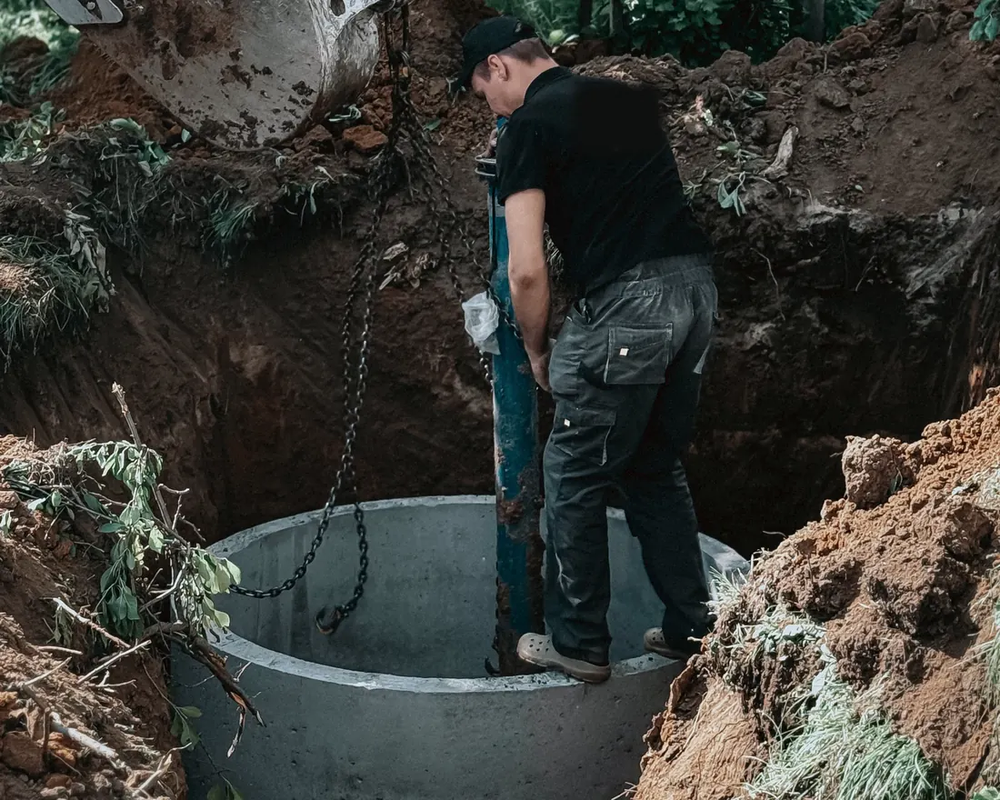

01
Ūdensapgāde un kanalizācijaВодоснабжение и канализация
Ūdensvada un kanalizācijas tīkli un pievadi, arī ugunsdzēsības sistēmas. Izbūve, darbu vadīšana un būvuzraudzība.Сети и вводы водопровода и канализации, включая системы пожаротушения. Монтаж, руководство работами и технадзор.